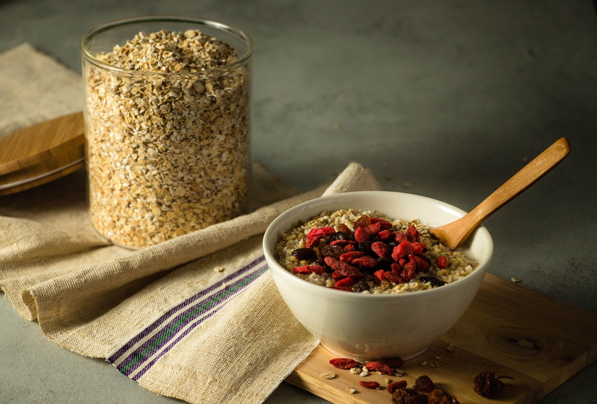

Boots McFoolish Breakfast Porridge

Venison steaks.
Description
Ingredients (serves 2 halfwits):
- 300ml/8 fl oz semi-skimmed milk
- 300ml/8 fl oz water
- 175g/6oz rolled oates
- Salt to taste
- A few tinned prunes
- A handful tinned pears
- A handful tinned plums
- Brown sugar or chia seeds (if you're from London)
Steps
- Put the milk, water, oates, and sal into a saucepan. Stir and bring to boil.
- Reduce the heat to a simmer for 7-8 minutes. The more you stir the porridge now, the creamier it will be.
- When cooked, remove from heat and fold in the fruits.
- Serve in a bowl and sprinkle brown sugar on top. If you are from London: feel free to use chia seeds or mouse whiskers 🐭.